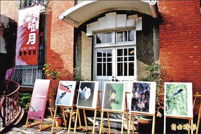

〈台北都會〉
成福「小攝手」 用心記錄台灣生態
張安蕎｜自由時報／新北都會焦點∣2015年4月7日
三峽成福國小攝影社遠近馳名，孩子們手持專業單眼相機，攝影足跡遍布全台知名生態景點，其中有三分之一的學生得過全國與新北市攝影大獎，適逢三峽在地活動「李梅樹月」，作品特別在歷史文物館外展出，從相片中可看到小學生特有的觀察角度。
學生們平時除了在校內觀察水草塘生態，也會到三峽煤礦、插角等地，拍攝台灣特有的藍鵲、大冠鷲等動物，就連三峽在地的祖師廟神豬慶典，他們也手持大砲到場記錄，堪稱是最佳小小攝影家。
四年級的李映辰第一次參加攝影比賽，就得到小學生數位生態攝影比賽佳作，不同於其他學生認真拍攝池塘生物，她的攝影鏡頭聚焦在同學們專注的神情上，她說︰「我站在岸邊看著他們認真的模樣，心裡很感動，於是拍下他們認真拍照的樣子。」
學生們此次共展出五十件作品，在歷史建築與大樹下舉行的攝影展，別有一番風味，參觀時除了欣賞這些生動的生態攝影作品外，也可以自我挑戰，看看自己究竟能認出多少鳥類與昆蟲，展期即日起至四月二十六日止。